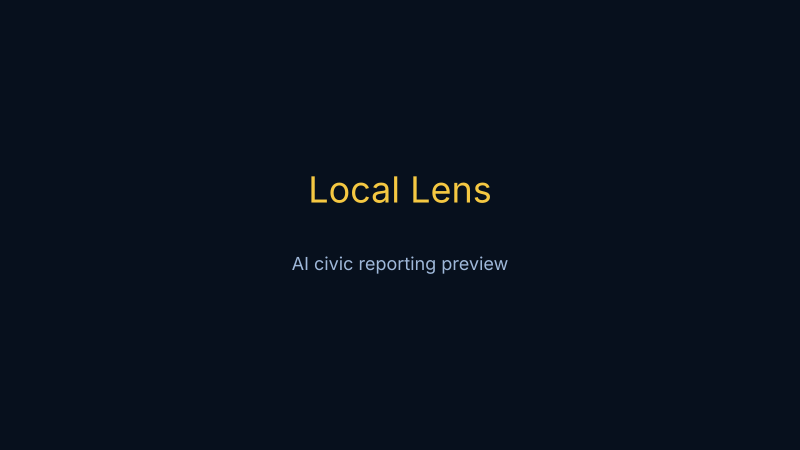
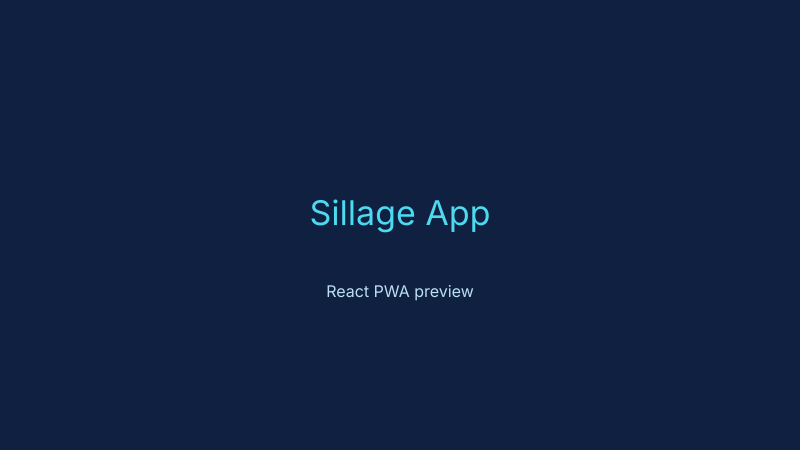
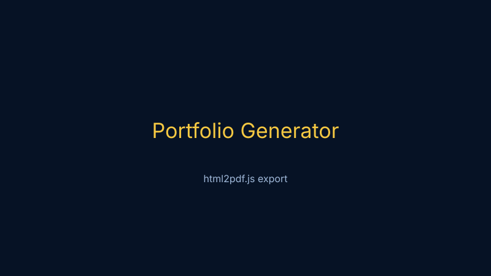
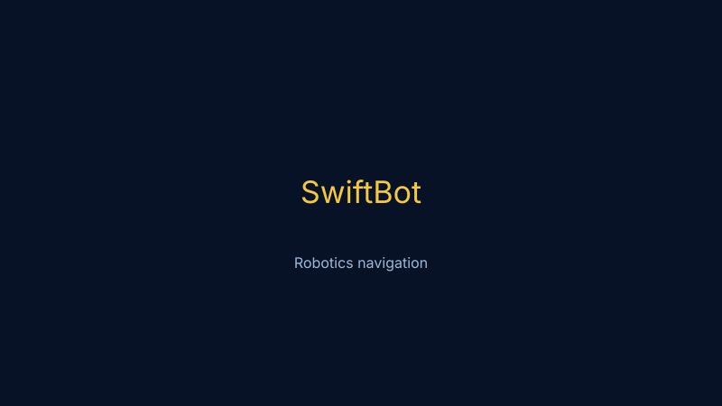
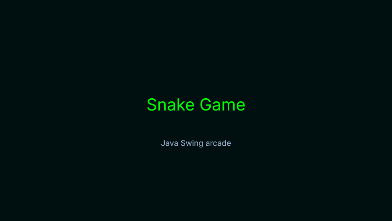
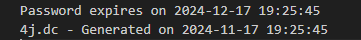
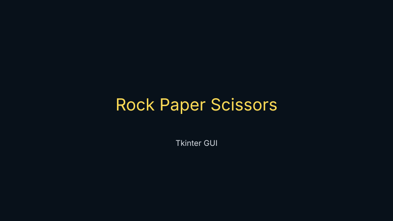
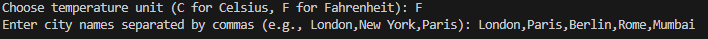
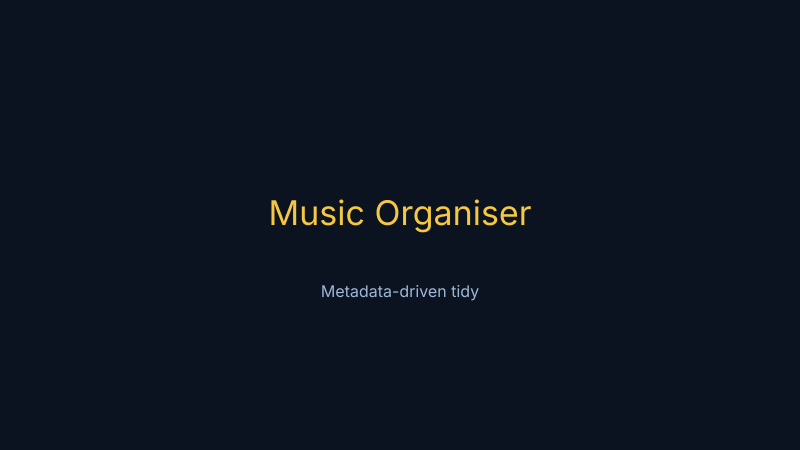
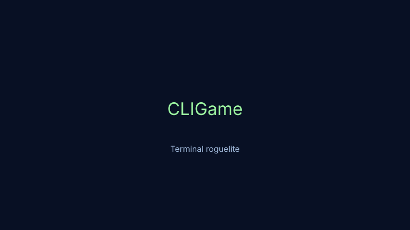

Available for Graduate Software Engineering roles
tehj@portfolio:~$ building polished software for real users
Hi, I'm Tehj Patel
Software Engineer
I build AI-powered applications, full-stack web platforms, and automation tools that solve real problems. I graduated with a BSc (Hons) in Computer Science, achieving Second Class (Upper Division) Honours (2:1), and I'm now looking for graduate software engineering opportunities across the UK.
Based in London, UK
Currently building
AI tools, graduate applications, and portfolio improvements
- Local Lens AI civic reporting platform
- SwiftBot navigation and robotics work
- Interview prep and system design practice
01
About Me
I'm a computer science graduate with a strong interest in AI, full-stack development, and systems that make everyday tasks easier. I graduated from Brunel University London with Second Class (Upper Division) Honours (2:1), and my final year work focused on practical, user-facing software rather than theory for theory's sake.
I enjoy turning complex problems into simple, clean experiences. I like building products that are useful, accessible, and clear enough that a recruiter or engineer can understand them quickly.
Alongside development, I've spent time teaching robotics and coding, which strengthened how I communicate, explain ideas, and support other people in a team environment.
Quick facts
RoleGraduate Software Engineer
DegreeComputer Science, 2:1
FocusAI, full-stack, automation
ExperienceRobotics Instructor
LocationLondon
02
Skills
Languages
Java
Python
JavaScript
TypeScript
SQL
HTML
CSS
Frameworks and tools
React
Node.js
Bootstrap
Tailwind
GitHub
Docker
Supabase
Cybersecurity
03
Featured Projects
AI project
Local Lens
AI civic reporting platform
Turns resident photos into structured council reports, with prioritisation, deduplication, and a dashboard for managing submissions.

Web app
Sillage App
React single-page app (PWA-ready)
React-based application with PWA manifest and modern frontend tooling. Includes an interactive UI in `src/App.js`, static assets in `public/`, and a build setup via `package.json`.

Web tool
Portfolio Generator
Browser-based portfolio generator
Client-side tool that assembles a portfolio from user inputs and exports a downloadable PDF. Built with vanilla JavaScript and `html2pdf.js` for easy sharing and export.

Robotics
SwiftBot
Navigation and retracing system
A Java project that parses QR code commands and drives a physical robot through a validated movement sequence.

Game
Snake Game
Java Swing arcade Snake
Classic Snake built with Java Swing: welcome screen, color chooser, pause/resume (P key), sound effects, food spawning that avoids the snake body, and persistent high-score tracking.

Tool
Password Generator
Cryptographically secure password tool
Tkinter desktop utility using Python's secrets module. Configurable length and minimum character types, live strength indicator, copy-to-clipboard and save-to-file with expiration reminders.

Game
Rock Paper Scissors
Tkinter GUI — quick best-of-3 matches
GUI Rock Paper Scissors with player name entry, score tracking persisted to JSON, best-of-3 win condition, and save/restart/reset controls for fast desktop play.

Web app
Weather App
Forecast app with dynamic imagery
API-driven weather experience with changing visuals, forecast views, and a responsive interface that works well on mobile.

Tool
Music Organiser
Organises downloaded music by metadata
Desktop Python script to tidy downloaded music collections: reads file metadata, sorts into artist/album folders, handles duplicates, and offers a simple CLI for batch runs.

CLI
CLIGame
Terminal-based Python game
Text-based CLI game implemented in Python across multiple level scripts (`main.py`, `level1.py`, `level2.py`). Simple input-driven gameplay, state progression across levels, and lightweight file-based saves for progress.

04
Experience
Robotics and Coding Instructor
Delivered programming, robotics, and engineering workshops to 500+ students aged 4–14, helping build confidence through hands-on learning and structured lesson delivery.
Software Projects Developer
Built personal projects across automation, AI, and web development, including portfolio tooling, generators, translators, and project showcases.
Computer Science Graduate
Completed final-year study with a focus on AI, cybersecurity, and software engineering, graduating with Second Class (Upper Division) Honours (2:1).
05
Education
Brunel University London
BSc (Hons) Computer Science. Final year modules focused on software engineering, AI, and cybersecurity.
Stanmore College
BTEC Level 3 Extended Diploma in IT. Graduated with D*D*D* and built a strong foundation in programming and technical problem solving.
06
GitHub Statistics
0projects
0commits
0core stacks
Contribution activity
github.com/t3hj
07
Contact
Let's talk about graduate roles, AI projects, or collaboration.
If you're hiring, I'd be glad to discuss how I can contribute as a graduate software engineer. You can also reach me on LinkedIn or GitHub.
Availability
Open to graduate software engineering roles now.
Strongly interested in engineering teams working on product, AI, automation, and platform work.